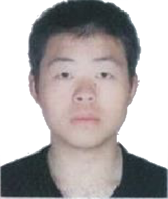
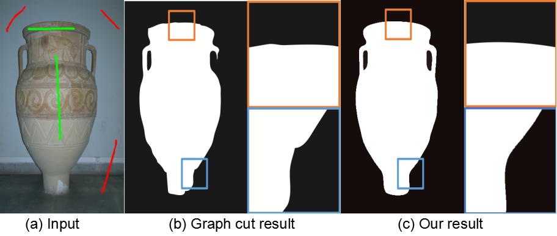
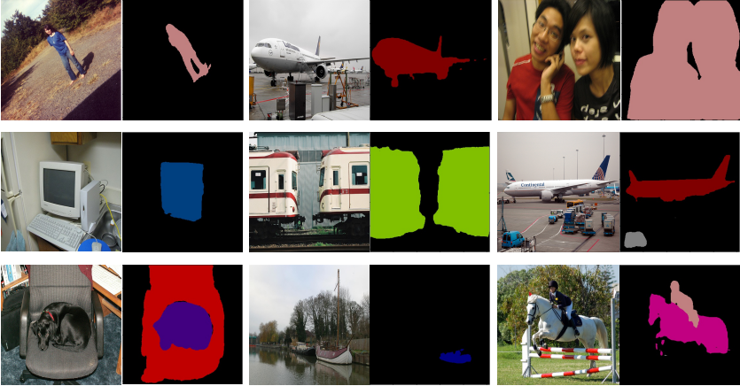
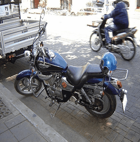

Jianfeng Zhang (张健锋)Undergraduate Student
Rm 316, Northwest Building, |
 |

Biography [CV]
I am currently an Applied Mathematics undergrad. student from Wuhan University, supervised by Prof. Xiaoping Zhang for undergraduate research. I am also intern at Farsee2, working with Prof. Song Wang and Prof. Lili Ju for Semantic Segmentation and Stereo Matching.
My research interests include 2D/3D Vision and Deep Learning.
Publications
|
 |
Jianfeng Zhang, Liezhuo Zhang, Yuankai Teng, Xiaoping Zhang, Song Wang, Lili Ju.
"Interactive Binary Image Segmentation with Edge Preservation", submitted to
AAAI Conference on Artificial Intelligence (AAAI), Sep. 2018.
[paper] |

|
Jianfeng Zhang, Yan Zhu, Xiaoping Zhang, Ming Ye, Jinzhong Yang. "Developing a Long Short-Term Memory (LSTM) based Model for Predicting Water Table Depth in Agricultural Areas", Journal of Hydrology (JH), 2018. |
Projects
|
 |
Deeplab V3+ in PyTorch We reimplement Deeplab V3+ in PyTorch, and evaluate it on Pascal VOC 2012 and Cityscapes datasets. We apply Deeplab V3+ to extract the same object from multi-view images in order to get better 3D reconstruction results. |
|
 |
Deep Grabcut (DeepGC) We replicate "Deep Grabcut for Object Selection", this paper proposes a segmentation approach that uses a rectangle as a soft constraint by transforming it into an Euclidean distance map. A convolutional encoder-decoder network is trained end-to-end by concatenating images with these distance maps as inputs and predicting the object masks as outputs. We implement this paper using PyTorch and train this model using Pascal VOC 2012 and SBD datasets. |

|
Video Action Recognition in PyTorch We reimplement several video action recognition models including C3D, R2Plus1D, R3D in PyTorch, and evaluate these models on HMDB and UCF datasets. We also apply C3D model into an online web game demo called "You Perform, I guess!". This demo obtains Excellent Demo Award in DeeCamp 2018. |
| Deeplab V3+ in PyTorch We reimplement Deeplab V3+ in PyTorch, and evaluate it on Pascal VOC 2012 and Cityscapes datasets. We apply Deeplab V3+ to extract the same object from multi-view images in order to get better 3D reconstruction results. | |
Honors & Awards
| Excellent Demo Award, DeeCamp, 2018 |
| Best Bachelor Thesis Award (1/180+, School of Mathematics and Stastics, Wuhan University), 2018 |
| Outstanding Student Scholarship, 2015-2017 |
| Honorable Mention, The Mathematical Contest in Modeling (MCM), Consortium for Mathematics and Its Application, 2015 |
Teaching
| 2017-2018 | Spring | C Language Programming |
| 2017-2018 | Fall | Data Structures and Algorithms in Python |
© Jianfeng Zhang | Last updated: 09/11/2018